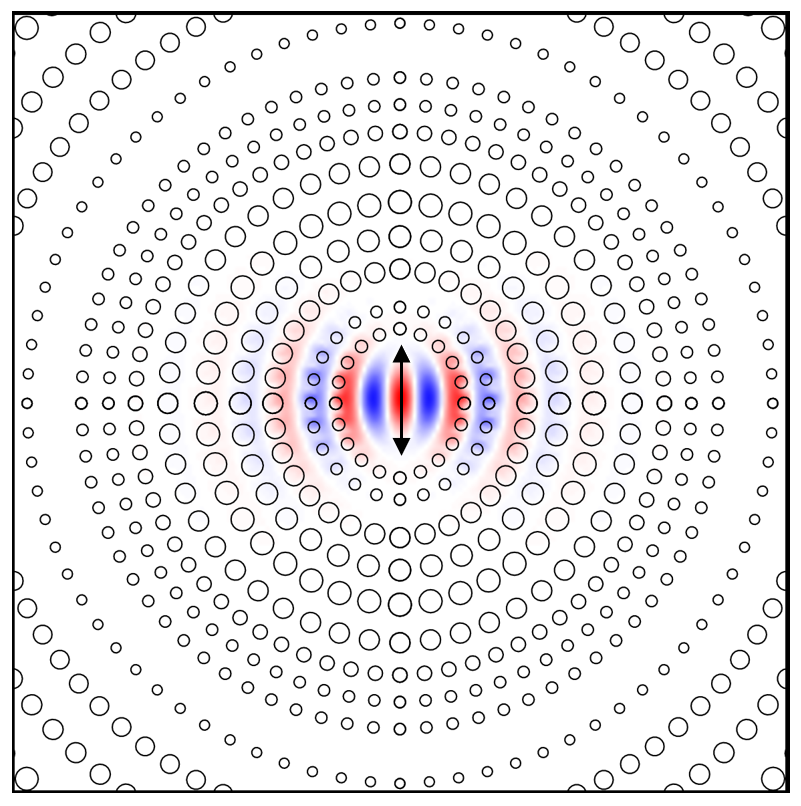

<div id="ajax-page" class="ajax-page-content">
    <div class="ajax-page-wrapper">
        <div class="ajax-page-nav">
            <div class="nav-item ajax-page-close-button">
                <a id="ajax-page-close-button" href="#"><i class="lnr lnr-cross"></i></a>
            </div>
        </div>

        <div class="ajax-page-title">
            <h1>Field-based Design of a Resonant Dielectric Antenna for Coherent Spin-Photon Interfaces</h1>
        </div>

        <div class="row">
            <div class="col-sm-8 col-md-8 portfolio-block">
                <!-- Cover image -->
                <a href="https://opg.optica.org/oe/fulltext.cfm?uri=oe-29-11-16469&id=451057" target="_blank"></a>

                <!-- Abstract -->
                <p class="portfolio-page-page-content">We propose a field-based design for dielectric antennas to interface diamond color centers in dielectric membranes with a Gaussian propagating far field. This antenna design enables an efficient spin-photon interface with a Purcell factor exceeding 400 and a 93% mode overlap to a 0.4 numerical aperture far-field Gaussian mode. The antenna design with the back reflector is robust to fabrication imperfections, such as variations in the dimensions of the dielectric perturbations and the emitter dipole location. The field-based dielectric antenna design provides an efficient free-space interface for closely packed arrays of quantum memories for multiplexed quantum repeaters, arrayed quantum sensors, and modular quantum computers.</p>
            </div>

            <div class="col-sm-4 col-md-4 portfolio-block">
                <!-- Project Description -->
                <div class="project-description">
                    <div class="block-title">
                        <h3>Description</h3>
                    </div>
                    <ul class="project-general-info">
                        <li><p><i class="fa fa-user"></i>Linsen Li, Hyeongrak Choi, Mikkel Heuck, and Dirk Englund. "Field-based design of a resonant dielectric antenna for coherent spin-photon interfaces." Optics Express, 29, 16469-16476. (2021)</p></li>
                        <li><p><i class="fa fa-globe"></i> <a href="https://opg.optica.org/oe/fulltext.cfm?uri=oe-29-11-16469&id=451057" target="_blank">https://opg.optica.org/oe/fulltext.cfm?uri=oe-29-11-16469&id=451057</a></p></li>
                    </ul>

                    <div class="tags-block">
                        <ul class="tags">
                            <li><a>Photonics design</a></li>
                            <li><a>Numerical simulation</a></li>
                        </ul>
                    </div>
                </div>
                <!-- Project Description -->
            </div>
        </div>
    </div>
</div>
